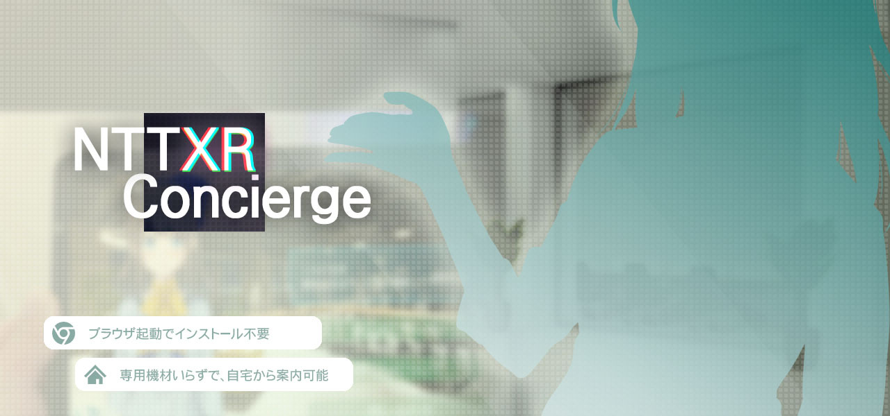

アバター経由でAI応対、有人応対も実施できるアバター接客システムです。
一次受け付けをChatBotで動作する「AI応答モード」で行い、難しい質問や対話が必用な業務は有人対応である「テレイグモード」に移行することで、本当に必要な時に、必要な場所へ人的稼働を割くことができます。
窓口受付
オフィスやホテル、施設の総合案内などあらゆる窓口業務を自動/遠隔化できます。
人の応対が必要な時でも、窓口応対者はテレワークスペースから応対業務を行うことが可能です。
接客応対
商品紹介や販売、各種手続きを行うための接客業務を自動/遠隔化できます。難易度の高い対話が必要な応対業務において、本当に必要な時にだけ人の稼働を利用します。
このサービスはブラウザで機能する為、簡単にiframeなどで差し込んで表示することが可能です。
実際にiframeを用いて表示しているのがこのデモとなります。